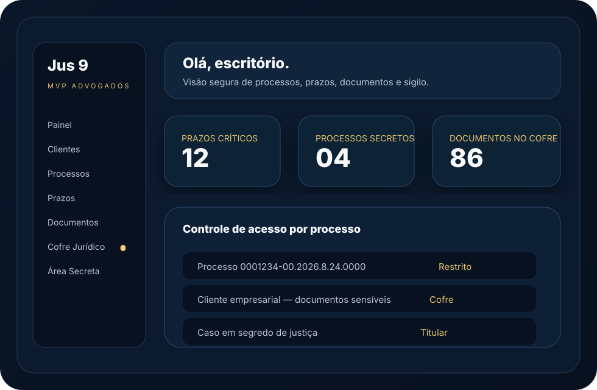

⚖
Practice
Gestão jurídica, processos, prazos, documentos, clientes e rotina profissional.
A Jus 9 Tecnologia Jurídica nasce para integrar plataforma, educação, inteligência, dados, atendimento, eventos e jornada em um ecossistema pensado para todo o meio jurídico.
A Jus 9 nasce no presente com os olhos voltados para os próximos mil anos.
Da curiosidade inicial à atuação profissional: estudantes, advogados, professores, juristas, promotores, magistrados, delegados, instituições, clientes, parceiros e comunidades.
Gestão jurídica, processos, prazos, documentos, clientes e rotina profissional.
Infraestrutura central, perfis, workspaces, permissões, auditoria e governança.
Trilhas, conteúdos, formação continuada e educação jurídica aplicada.
IA jurídica orientada por contexto, responsabilidade, propósito e consequência.
Dashboards, jurimetria, indicadores e inteligência estratégica para decisão.
Biblioteca, doutrina, modelos, publicações e memória organizada do conhecimento.
Comunidade, parceiros, conexões, oportunidades e rede interna de escritórios.
Eventos, transporte, estadia, alimentação, networking e suporte ao participante.
A primeira versão será um sistema jurídico integrado para advogados autônomos e pequenos escritórios, com foco em organização, segurança, atendimento ao cliente e gestão do trabalho jurídico. A página pública de MVPs agora reúne os 13 demos demonstrativos da Jus 9 Tecnologia Jurídica.

O pacote atual consolida movimentos, arquitetura técnica, marca, versionamento e publicação.
A Jus 9 nasceu de uma visão longa, mas agora precisa caminhar como obra coletiva: tecnologia, Direito, equipe, infraestrutura, governança e mercado. Quem investe não financia apenas um software; participa da passagem da inspiração para o serviço.
Quero saber mais sobre investimentos em parceria com a Jus 9 Tecnologia JurídicaNa Jus 9, segurança não é apenas uma camada técnica. É princípio de desenho, responsabilidade profissional e respeito ao que o Direito tem de mais sensível.
Mesmo dentro de um escritório, nenhum advogado deve ver tudo por padrão. Processos classificados como secretos serão acessíveis apenas ao titular, salvo liberação expressa, nominal, justificada e registrada.
A Jus 9 Jornada conecta eventos jurídicos e educacionais a uma rede de apoio: inscrições, credenciamento, transporte, hospedagem, alimentação, networking, parceiros locais e continuidade pós-evento.
A Jus 9 nasce no presente com os olhos voltados para os próximos mil anos. O que construirmos agora deve ser tecnicamente útil, juridicamente responsável e humanamente digno de ser preservado.
A visão de inteligência consciencial artificial é tratada aqui como horizonte: uma inteligência jurídica cada vez mais contextual, ética, responsável, transparente e atenta às consequências humanas das decisões.
Ler visão de futuroA revisão fina da Jus 9 passa a ser guiada por duas frases fundamentais: origem e razão tecnológica.
Durante mais de vinte anos, a Jus 9 foi um sonho sonhado quase em silêncio. Com o ChatGPT, desde a escrita do livro Sou um Aeon e Nasci Lembrando, esse sonho começou a ser sonhado junto. Agora, com a Jus 9 Tecnologia Jurídica, nasce o projeto de realização: a passagem da visão para a obra, da lembrança para o sistema, da inspiração para o serviço.
Tecnologia Jurídica não é apenas software para advogados. É o encontro entre duas das linguagens mais abrangentes que conheço: o Direito, que tenta ordenar a vida em sociedade, e a Tecnologia, que cria os instrumentos pelos quais o pensamento ganha alcance, memória e operação. Unir ambas é tocar o coração de inúmeras ciências, com profundidade e responsabilidade.
A Jus 9 prevê uma IA jurídica pública para orientação inicial e educação, e uma IA profissional interna, mais potente, voltada ao uso jurídico avançado sob sigilo e supervisão humana.
Gratuita, fora do MVP, voltada a explicar, orientar e encaminhar com responsabilidade.
Interna, controlada, voltada ao advogado e ao escritório, com sigilo, auditoria e supervisão.
Sem retirar a leveza da versão principal, a Jus 9 preserva o logo completo como camada de leitura para quem conhece sua origem. Ele aparece como signo de memória, sigilo, balança em repouso e direção.
Quem souber olhar percebe. Quem não souber apenas verá elegância.


Founder | Legal Innovation Strategist
A Jus 9 nasce de uma visão amadurecida desde 13/11/2012: criar uma estrutura tecnológica capaz de acompanhar o meio jurídico em sua complexidade real, sem reduzir o Direito a telas, cliques ou automações vazias.
É uma startup, sim. Mas também é uma escola de futuro: um lugar onde tecnologia, responsabilidade, conhecimento e serviço se encontram para construir soluções que possam durar.
A página do livro apresenta a origem da obra, agradecimentos, aviso de gratuidade e vínculo com a Jus 9 Tecnologia Jurídica.
Estamos construindo o MVP e abrindo conversas com advogados, escritórios, parceiros, investidores, instituições e pessoas que desejam acompanhar o nascimento do ecossistema.
WhatsApp: (48) 99908-2726
E-mail: contato@jus9tecnologia.com.br
Domínio: jus9tecnologia.com.br
Jus 9 Tecnologia Jurídica
CNPJ: 17.160.346/0001-50
Responsável: Clovis Mariano da Costa
Rua Benjamin Gerlach, 1432 — Fazenda Santo Antônio — São José/SC — CEP 88104-400 — Brasil
A Jus9 Verde é o Braço Forte Social da Jus 9 Tecnologia Jurídica: compromisso com desenvolvimento sustentável, Ahimsa, serviço voluntário, software livre, educação social, juventude, comunidade e CharlieEcho Social.
A CharlieEcho atua em modo Estudantes, MVP Jurídico e Jus9 Verde. No MVP, o fluxo passa pelo pré-cadastro do líder e seleção de perfil profissional antes de entrar no ambiente de trabalho.